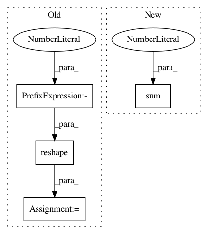

45a10bc6d708fade197a37bfbc62312caf70e6a7,keras/layers/convolutional_recurrent.py,ConvLSTM2D,get_constants,#ConvLSTM2D#Any#Any#,438
Before Change
if self.implementation == 0 and 0 < self.dropout < 1:
input_shape = K.int_shape(inputs)
input_dim = input_shape[-1]
ones = K.ones_like(K.reshape(inputs[:, 0, 0], (-1, 1)))
ones = K.tile(ones, (1, int(input_dim)))
def dropped_inputs():
return K.dropout(ones, self.dropout)
After Change
shape = list(self.kernel_shape)
shape[-1] = self.filters
ones = K.zeros_like(inputs)
ones = K.sum(ones, axis=1)
ones = self.input_conv(ones, K.zeros(shape),
padding=self.padding)
ones += 1.
In pattern: SUPERPATTERN
Frequency: 4
Non-data size: 4
Instances
Project Name: keras-team/keras
Commit Name: 45a10bc6d708fade197a37bfbc62312caf70e6a7
Time: 2017-02-17
Author: francois.chollet@gmail.com
File Name: keras/layers/convolutional_recurrent.py
Class Name: ConvLSTM2D
Method Name: get_constants
Project Name: senarvi/theanolm
Commit Name: a636431f9374bb9ae6e3a8107549bf20f91cdb1b
Time: 2016-11-20
Author: seppo.git@marjaniemi.com
File Name: theanolm/network/samplingoutputlayer.py
Class Name: SamplingOutputLayer
Method Name: _get_target_preact
Project Name: tensorflow/agents
Commit Name: 982db1e3e4097b2fa2727bddf05307633dd6df83
Time: 2020-03-12
Author: no-reply@google.com
File Name: tf_agents/bandits/agents/utils.py
Class Name:
Method Name: build_laplacian_over_ordinal_integer_actions
Project Name: SPFlow/SPFlow
Commit Name: 2333ea6770a94549f56f4c9c0a7a57d076b98eed
Time: 2018-11-19
Author: claas@voelcker.net
File Name: src/spn/algorithms/stats/Moments.py
Class Name:
Method Name: sum_moment